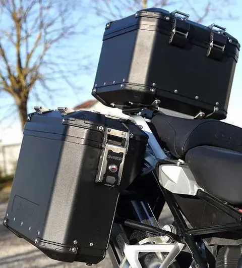

Accessori
Accessori e ricambi
Navigatori, action cam e componenti da abbinare alla tua moto.
Esplora accessori e ricambiGomme per utilizzi diversi, con servizio di cambio pneumatici in officina.

In negozio puoi chiedere informazioni sugli pneumatici; l’officina è attrezzata con smontagomme. Concorda il cambio indicando moto e misure.
Chiedi di pneumaticiPer modelli, taglie e disponibilità, chiedi al negozio o passa in Via Trino 200.